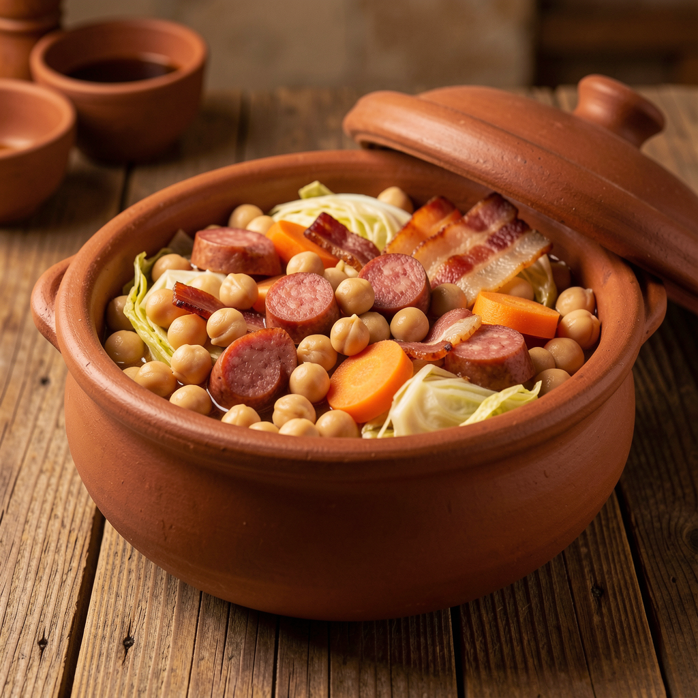
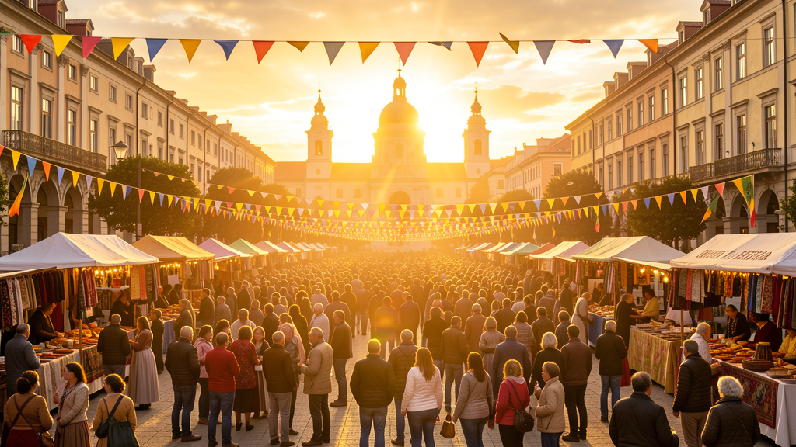
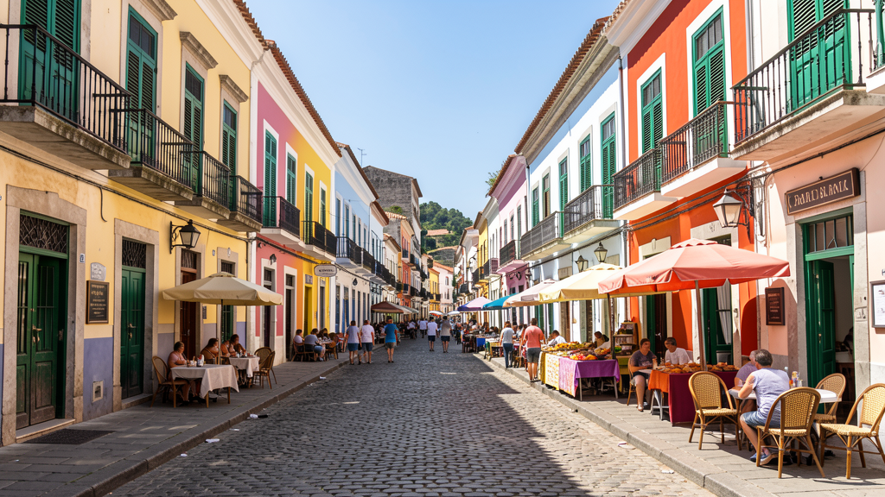

Cultura y Estilo de Vida
Plato típico — Cocido Asteriano
Un puchero contundente que reúne lo mejor de la tierra y el ganado. Se come tradicionalmente los domingos en familia y se considera el alma culinaria de Asteria, reconocido como Patrimonio Cultural Inmaterial en 2019.
Ingredientes (para 4): 400 g de garbanzos «Lumin» (cultivados en el valle central), 200 g de morcilla de arroz y pimiento, 150 g de tocino ibérico, 1 chorizo de piñones, repollo, patatas, zanahoria, hueso de jamón, azafrán en hebra, laurel y pan de centeno con aceite de oliva arbequina.
Preparación: Los garbanzos se remojan la noche anterior. Se cuecen en olla a presión 40 minutos con caldo frío, especias y hueso de jamón. A los 15 minutos se añaden las verduras. Aparte se sofríen la morcilla y el chorizo. Se sirve en cazuela de barro: primero el caldo con fideos finos, luego los garbanzos y verduras, y en un plato aparte las carnes. El «regaño» —pan con aceite— es imprescindible.

Festividad nacional — Día del Alba (12 de marzo)
Conmemora el Pacto del Alba de 1847, cuando las ocho regiones de Asteria acordaron unirse en una sola República bajo los principios de solidaridad y saber compartido. Es el día más importante del calendario cívico.

Tradiciones: amanecer comunitario con el himno, mercado de artesanía con talleres en vivo de cerámica y forja, Carrera de las 8 Estrellas (maratón popular que une las capitales regionales) y concierto sinfónico al atardecer en la Plaza del Lumin, en Valdoria.
Vida cotidiana
En las calles de Valdoria se mezclan los sabores del mercado central con el ritmo de los transeúntes. Los asterianos disfrutan de una cultura de café al aire libre, paseos por el malecón del Lumin y tertulias en las plazas coloniales.
